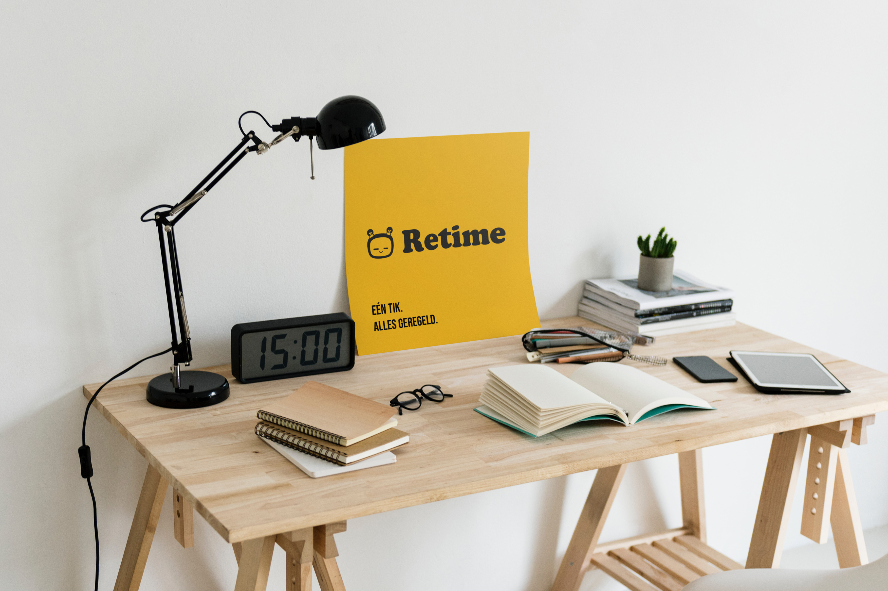
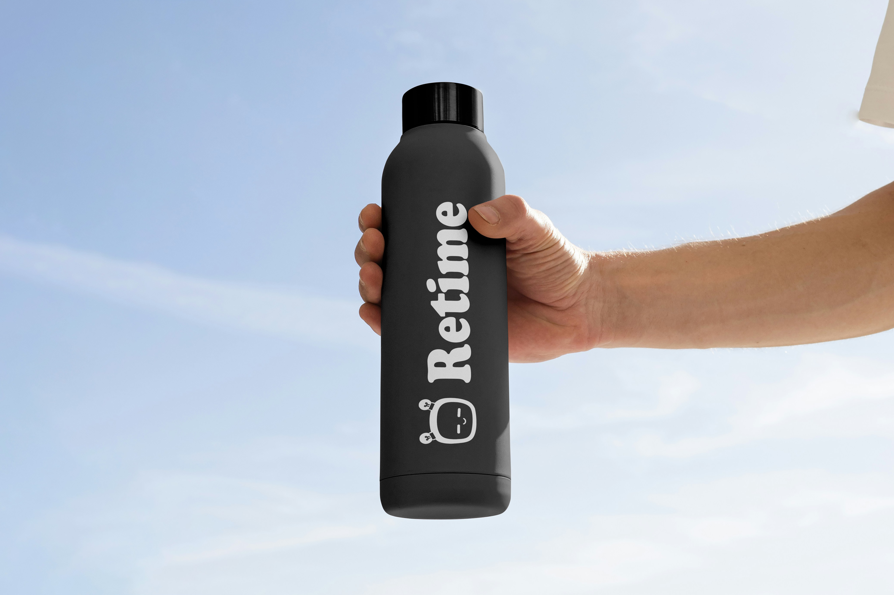
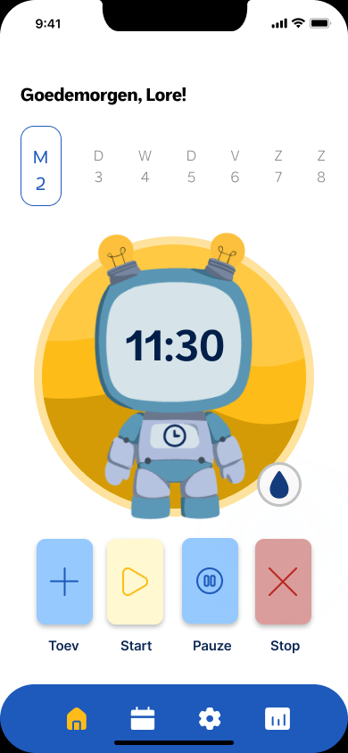
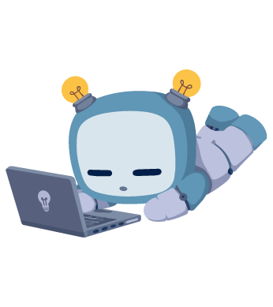
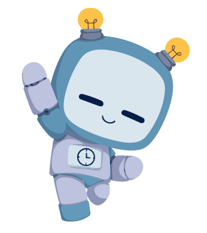
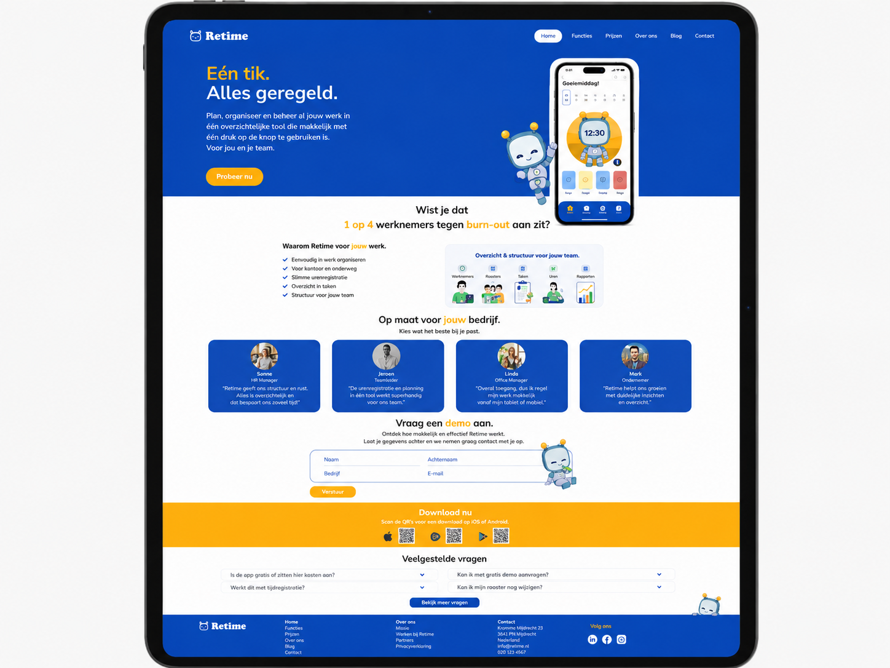
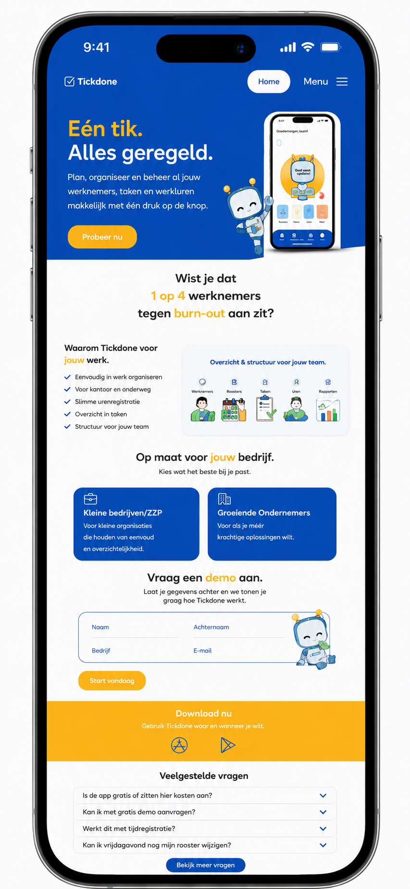
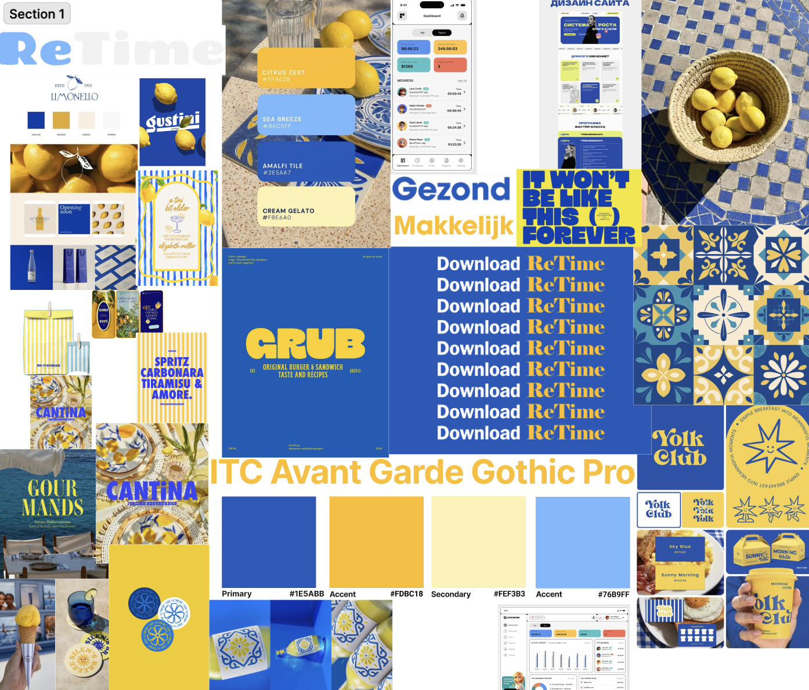
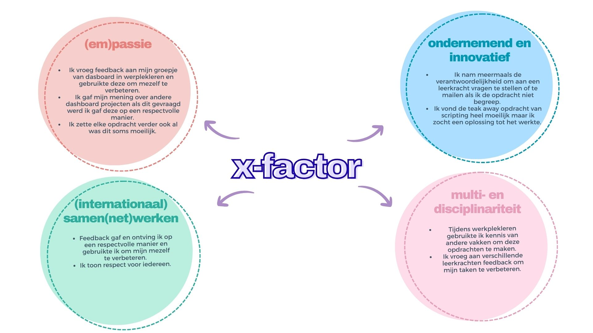

Werkplekleren 2
Clockwise
Beschrijving van de case
Voor onze WPL2-case hebben wij gewerkt aan een project dat oorspronkelijk “Clockwise” heette, maar later hebben we de naam veranderd naar Retime. Met deze nieuwe naam wilden we beter uitstralen waar ons concept voor staat: een gezond, toegankelijk en eenvoudig systeem voor iedereen. Retime is een digitaal tijdregistratiesysteem waarmee werknemers gemakkelijk hun werkuren kunnen bijhouden, zowel van thuis uit als op de werkvloer. Het systeem werkt met een eenvoudige tikklokfunctie en geeft gebruikers een duidelijk overzicht van hun gepresteerde uren. Dit idee sluit ook goed aan bij de toekomstige regelgeving, aangezien het vanaf 2027 verplicht wordt om werkuren correct bij te houden en door te geven aan de overheid. Tijdens het project hebben we stap voor stap gewerkt aan het uitbouwen van het concept. Eerst hebben we onderzoek gedaan naar bestaande systemen en de noden van gebruikers. Daarna hebben we wireframes en ontwerpen gemaakt om de werking van de applicatie visueel voor te stellen. Ook hebben we gewerkt aan de branding van het project, zoals de naam, het logo en de missie en visie van Retime. Ons doel was om een moderne oplossing te creëren die gebruiksvriendelijk is voor zowel kleine bedrijven als grote ondernemingen. Doorheen het project hebben we verschillende ideeën aangepast en verbeterd op basis van feedback van medestudenten en docenten.
Mijn aandeel in het project
Binnen het project heb ik aan verschillende onderdelen meegewerkt. Zoals het helpen ontwerpen van de wireframes. Hiermee hebben we de structuur en de lay-out van de applicatie uitgewerkt. Ik dacht mee na over hoe we de applicatie zo eenvoudig en toegankelijk mogelijk konden maken. Daarnaast heb ik geholpen bij het ontwerpen van het logo en het bepalen van de uitstraling van Retime. We wilden een moderne en professionele look creëren die vertrouwen uitstraalt en tegelijkertijd eenvoudig blijft en ook staat voor gezondheid geen verplichting wel een hulp. Ook heb ik meegewerkt aan het opstellen van de missie en visie van het project. Daarbij lag de focus op toegankelijkheid, gezondheid en efficiënt werken. Verder was ik betrokken bij het proces van het begin tot het huidige eindresultaat. Tijdens groepswerk probeerde ik actief mee te denken en mijn mening te geven over mogelijke oplossingen en verbeteringen. Doorheen de case heb ik geleerd hoe belangrijk communicatie en samenwerking zijn binnen een teamproject. Iedereen had zijn eigen taken, maar door goed samen te werken konden we een sterker eindresultaat neerzetten. Ik heb het logo gemaakt, meegewerkt aan het moodboard, deel van het onderzoek gedaan en wireframes opgebouwd.
Wat ik eruit geleerd heb
Uit deze case heb ik geleerd, zowel technisch als persoonlijk. Ik heb beter leren samenwerken in groep en geleerd hoe belangrijk goede communicatie is tijdens een project. Daarnaast heb ik ervaring opgedaan met het maken van wireframes, branding en het uitwerken van een professioneel concept. Ik heb ook geleerd dat feedback een belangrijke rol speelt in het verbeteren van een project. Door opmerkingen van anderen serieus te nemen konden we Retime verder ontwikkelen tot een beter en duidelijker concept. Verder heb ik geleerd hoe je een idee omzet naar een concreet project met een duidelijke missie, visie en doelgroep. Deze ervaring heeft mij geholpen om creatiever en georganiseerder te werken en gaf mij een beter beeld van hoe projecten later in een werk omgeving verlopen.
Dit is het resultaat








Bekijk de app van Retime Bekijk de website van Retime Bekijk de eindreflectie van werkplekleren 2
Werkplekleren 1
Situering binnen Profiel DVO
ROL 1: CREATIEVE VORMGEVER
Ik vind dat ik als creatieve vormgever de wensen van een klant goed begrijp en kan omzetten in een digitaal ontwerp. In het laatste jaar van het middelbaar werkte ik mee in de leeronderneming Poppub, waar ik veel leerde over klantgericht werken. Ik heb in het visueel ontwerpen een basiskennis van HTML en CSS. JavaScript en digitale animaties zijn nog een werkpunt, maar hieraan wil ik verder werken.
ROL 2: FRONT-END ONTWIKKELAAR
Ik kan teksten, afbeeldingen en data verwerken en tonen in een online toepassing. Het aanpassen van een website aan verschillende schermen vind ik soms nog moeilijk. Ik werk volgens een planning, maar dit verloopt niet altijd even vlot waardoor sommige taken kunnen uitlopen.
ROL 3: COMMUNICATOR / TEAMSPELER
Ik hou mij aan de werking en afspraken binnen een bedrijf. Ik communiceer de nodige informatie met mijn team. Mijn Engels is voldoende maar nog niet heel goed. Ik werk samen met anderen en neem deel aan overlegmomenten.
ROL 4: LEVENSLANG LERENDE
Ik leer graag bij en probeer veel nieuwe dingen.
EINDREFLECTIE WERKPLEKLEREN 1
Tijdens werkplekleren 1 hebben we van alles gedaan: we hebben een dashboard en een portfolio gemaakt, veel zelfreflectie gedaan en naar verschillende sprekers geluisterd. Ik vond werkplekleren leuk omdat dit het eerste vak was waar je je eigen inbreng en creativiteit mocht gebruiken. Ondertussen is dit ook bij andere vakken.
Tijdens werkplekleren was ik heel blij dat we een dashboard mochten maken. Dit was 1 van de eerste creatieve opdrachten die we kregen. Daarnaast vond ik de sprekers interessant omdat zij ons verschillende inzichten gaven over het werk later. Ook leerden we meer over onszelf.
Ik vond het soms wel moeilijk dat de opdrachten zo groot waren. Als iets dan langer duurde dan verwacht, had ik soms een tijdsprobleem omdat er veel onderdelen aan een opdracht gekoppeld zijn.
Ik heb ontdekt hoe belangrijk plannen is en wil hier in de toekomst meer op inzetten. De meest waardevolle les vond ik die van de sprekers, omdat je hier meer inzicht kreeg over je werk later en wat er van ons verwacht wordt.
Ik ben trots dat ik deze portfolio heb gemaakt en dat ik veel van de code zelf heb geschreven. Het heeft veel indruk gemaakt dat ik dit kon. Naar mijn mening is het mooi en goed gelukt.
Bekijk de eindreflectie van werkplekleren 1
